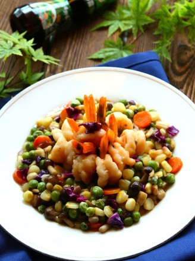
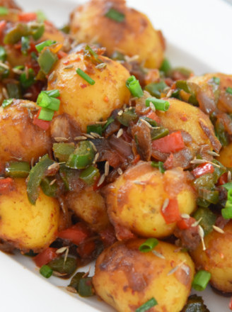
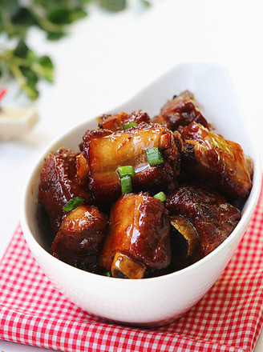
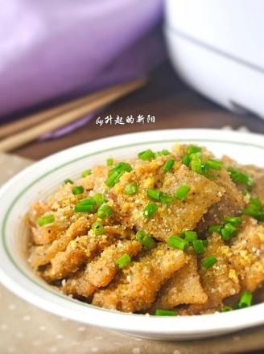
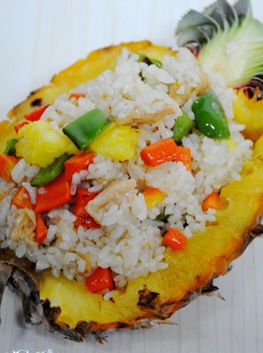
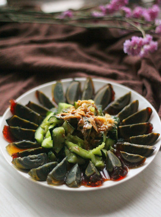
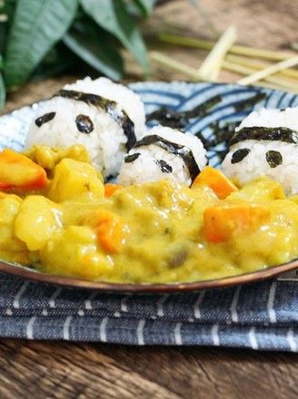
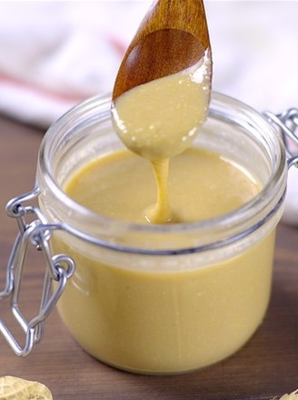
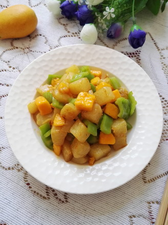

Choose your favorite：

fried Shrimps With Cashew Nuts

Braised Potato

Sweet And Sour Pork Chops

Small risp Flesh

Pineapple-fried Rice

Preserved Egg

CurryRice

Eggs Soup

Fried Potato, Green Pepper and Eggplant